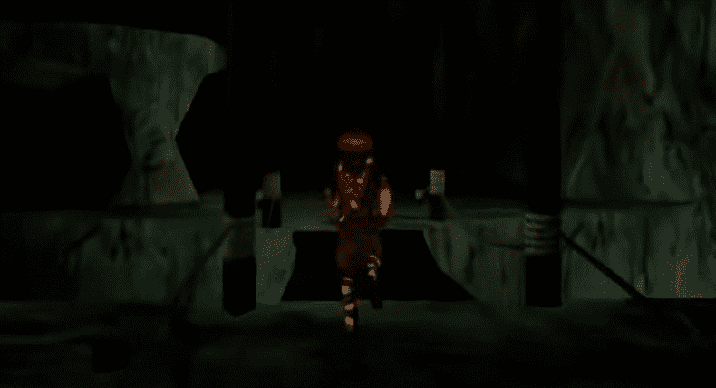
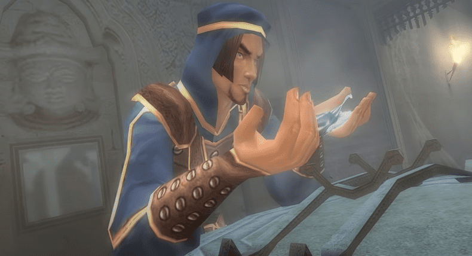
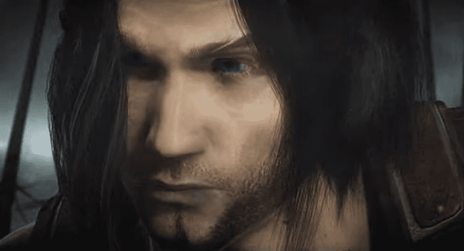
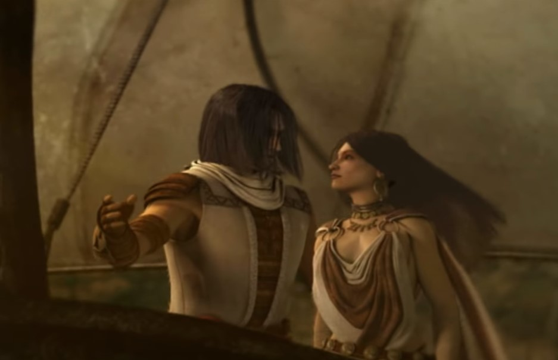
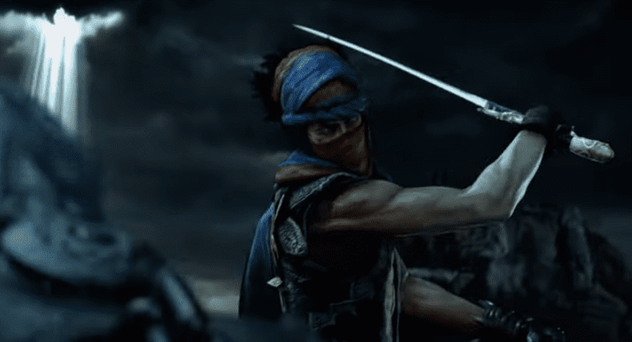
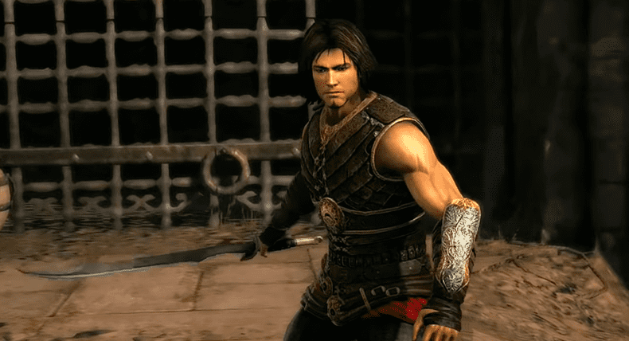
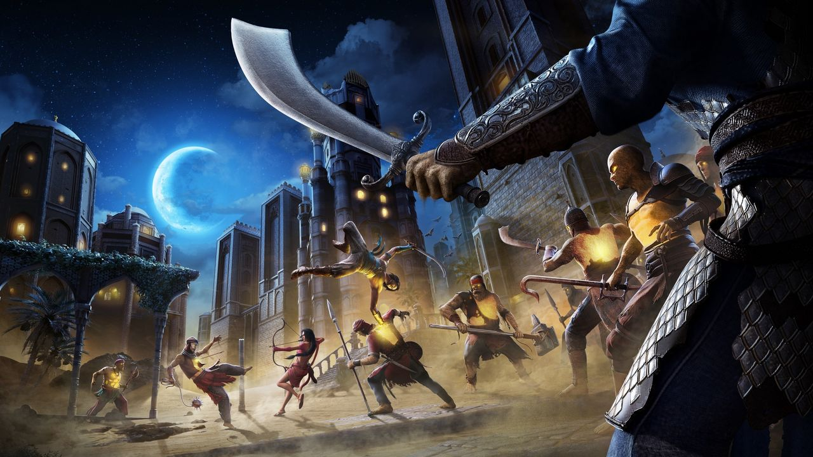

Prince of Persia
Первая часть игры была издана в далеком 1989 году для компьютеров Apple II, а позднее была портирована на множество приставок того времени, за что и снискала огромную популярность среди большой прослойки геймеров тех времен.
Хоть в наше время игра и выглядит как простенькая игрушка для кнопочных телефонов, однако тогда это был настоящий прорыв в сфере игр. Одна игра умудрилась задать тон множеству последующих игр и стать родоначальницей целой серии, которая до сих остается не только востребованной.
Сюжет же игры максимально прост для такого платформера и представляет из себя простую предысторию, согласно которой Султан – правитель Персии, уехал с армией на войну, а его великий визирь Джаффар, жаждущий власти, захватывает власть, попутно взяв в плен Принцессу. И Принцессе с этого момента остается жить ровно час, а ее возлюбленный Принц, главный герой игры, за это время должен сбежать из тюрьмы и, преодолевая множество ловушек и пробиваясь сквозь врагов, спасти принцессу. По окончании игры необходимо победить самого Джаффара, который имеет высокий навык фехтования в сравнении со своими подчиненными.
Геймплей состоит из беготни по коридорам с видом сбоку, где вам предстоит преодолевать всяческие ловушки, подбирать зелья и побеждать в фехтовальной схватке подчиненных Джаффара.
В целом, игра довольно интересная и даже в наше время может послужить эдакой убивалкой времени с пусть и кардинально устаревшей, но довольно милой графикой.
Prince of Persia 2: The Shadow and the Flame
Спустя четыре года после выхода первой части, а именно – в 1993 году, вышла вторая часть в серии Prince of Persia с обновленной графикой, которая представляла из себя теперь не темные и буквально черные коридоры, а яркие улицы, крыши, переулки и подземелья Персии, прорисованной в красочном и интересном дизайне. Для того времени качество было великолепное, однако, для тех, кто хочет пройти игру, но устаревший внешний вид отталкивает – доступен ремейк, созданный в 2013 году на мобильные телефоны с 3д-графикой и улучшенным визуалом.
Геймплейно игра мало отличается от первой части, за исключением ее наполнения новыми локациями и некоторыми незначительными доработками.
Сюжет игры продолжает историю первой части и повествует нам о том, что Джаффар, имея связь с черной магией, умудрился выжить после финального боя в первой части и, спустя 11 дней после поражения, он предпринимает новую попытку захвата власти и, перевоплотившись в Принца, превращает его самого в нищего, после чего приказывает схватить, что он не мог ничего рассказать Принцессе. Игроку в ходе сюжета предстоит побывать в разных локациях, увидеть интересные места и раздобыть священное пламя, которым можно убить Джаффара окончательно и спасти Принцессу.
Игра вышла достаточно хорошей и была воспринята поклонниками и новыми игроками положительно, что не могло не вызвать создания продолжения этой игры.
Prince of Persia 3D
Третья часть серии Prince of Persia вышла в 1999 году и являет собой ремейк первой части, призванный перенести приключения Принца в объемный игровой мир.
Однако, игроки подобный ремейк не оценили и несмотря на то, что Prince of Persia 3D был приправлен новыми механиками – новыми они оказались лишь для конкретной серии и смотрелись вторично, особенно на фоне Tomb Raider. В общем и целом, эта игра почти полностью копировала геймплей ранее упомянутой игры – ловушки, загадки и прочее были уж слишком схожи.
Что касается боевой системы – она вышла пусть и не идеально, но и не такой плохой для тех времен. По ходу прохождения становились доступны разные виды оружия, которые давали те или иные преимущества. Впрочем – это ремейк не спасло.
Сюжетно игра повторяла полностью первую часть серии Prince of Persia и не смогла порадовать фанатов продолжением сюжета или хоть какой-то новизной, за исключением переработки в 3D.
Prince of Persia: The Sands of Time
Четвертой в серии и самой культовой частью стала игра Prince of Persia: The Sands of Time, выпущенная в 2003 году. Она своим появлением смогла не только порадовать фанатов серии, но и взбудоражила массу критиков. Игра вышла столь красивой в визуальном плане для тех времен, столь интересной в плане сюжета и настолько привлекательной в своей геймплейной составляющей, что игра едва ли не сразу после выхода начала завоевывать одну награду за другой, войдя в список величайших игр.
Несмотря на то, что игра сменила свой жанр с платформера на приключенческий экшен – подобное изменение было воспринято на ура, поскольку помимо очередного переноса игры в объемное 3d пространство, разработчики сделали отличную для тех лет графику. Кроме того создали интересный сюжет, который, хоть и не был сильно связан с оригинальной игрой – оказался более чем интересным и интригующим, а сам мир игры значительно расширился, что и позволило создать тот мир Принца Персии, который мы сейчас знаем.
Сюжет игры рассказывает нам о Принце Персии, который вместе со своим отцом захватывает индийский замок Махараджи. В замке хранятся огромные Песочные Часы, которые вместе с Кинжалом Времени, способны двигать время вспять. Принц захватывает Кинжал во время осады, не зная о его свойствах и по предложению предателя визиря вонзает его в Песочные Часы, что приводит к высвобождению Песков Времени, которые вмиг обращают людей вокруг в монстров вместе с отцом Принца. Монстров убить можно лишь Кинжалом, а для того, чтобы всех спасти необходимо вновь вонзить Кинжал в Песочные Часы, до которых и предстоит игроку добираться сквозь полчища врагов и кучи разнообразных ловушек.
В общем и целом, игра затягивает своим необычным сюжетом, а геймплей, состоящий из многочисленных сложных акробтических приемов, карабканий по уступам и визуально красивых боев лишь увеличивает интерес. Для нашего времени игра в визуальном плане достаточно сильно устарела, однако в 2021 году обещают выпустить ремейк знаменитой части. На YouTube уже имеется трейлер ремейка, который, к сожалению, разочаровывает, поскольку визуальная составляющая переделана до уровня 2010 года и для 2021 года подобный ремейк – скорее насмехательство, нежели попытка реставрации.
Prince of Persia: Warrior Within
Продолжение предыдущей части вышло в 2004 году и вызвала двоякие отзывы со стороны критиков, поскольку некогда веселый и остроумный Принц стал агрессивным и мрачным воином, который бредет к своей цели, озлобленный на весь мир. Подобная реакция понятно – ведь в игре были добавлены расчленение противников, оголенные части тела у женских персонажей, бранные слова в диалогах, да и в целом игра стала в разы более мрачной в плане стилистики. В прочем – игра получила не менее широкую популярность среди игроков, которые были готовы к такому повороту сюжета, ведь пережитое Принцем не могло не отразиться на его характере.
В плане геймплея игроков ждали значительные улучшения, поскольку игра стала в разы более интересной – появились новые виды ловушек, улучшилась боевая система и появилась возможность подбирать оружие врагов. В плане графики игра тоже улучшилась, неплохо раскрывая мрачную локацию разрушенного древнего замка.
Сюжет игры завязывался на том, что Принц, выпустивший Пески Времени, нарушил ход самого Времени. Из-за этого на него вышел Дахака – Страж Потока Времени, призванный устранять всех, кто мешает Времени течь в правильном русле. Гонимый Дахакой, Принц отправляется на далекий остров, где расположен замок Императрицы Времени, которая и создала те самые Песочные Часы. Игроку предстоит долгий и насыщенный интересными моментами путь, пролегающий по разрушенного величественному замку, а целью станет предотвращение появления самих Песочных Часов, что должно отменить события предыдущей игры.
Игра в целом воспринимается на отлично – не мало радует то, что в ней присутствуют две разные концовки, которые зависят от определенного снаряжения Принца. Кроме того, очень повышает интерес и накал сам Дахака, который постоянно преследует Принца, что порой приводит к интересным по своей постановке погоням с акробатикой и паркуром
Prince of Persia: The Two Thrones
Следующая игра вышла в 2005 году и вызвала бурю положительных эмоций как у критиков, так и у игроков, поскольку игра шла по накатанному пути и, не изменяя механик игр, дополняла их и улучшала. Графика вышла не менее привлекательной и смогла порадовать игроков. Сам же Принц – стал менее мрачным и уже больше походил на того жизнерадостного парня, которого мы видели в первой части трилогии – связано это в большей части с тем, что за ним теперь не гоняется всемогущий демон.
Сюжет же повествует о том, что Принц, победив Дахака и освободив Императрицу, возвращается обратно в Вавилон, где обнаруживает то, что Вавилон захвачен врагами под предводительством Визиря. Визирь, не убитый из-за отмененных в первой части событий, захватил власть в своей стране и движимый жаждой бессмертия, пошел войной на Вавилон. Принцу вновь предстоит сражаться с Визирем и его приспешниками, измененными Пескам Времени, которые вновь вырвались в мир из-за Визиря. Но второй проблемой Принца окажется его темная сущность, что пробуждалась в предыдущих частях и вот теперь жаждет завладеть телом Принца окончательно.
Игроку предстоит долгий и интересный путь, который, вне всяких сомнений, вновь затянет его в чарующий мир восточной сказки. Пусть для нашего времени графика и устарела, но поиграть в нее можно хотя бы ради интересного сюжета, концовка которого заставит любого фаната придаться ностальгии.
Prince of Persia 2008
В 2008 году вышла новая игра Prince of Persia, которая была задумана и, собственно, выполнена, в новом визуальном стиле, напоминающем художественную рисовку, что делало едва ли не каждый скриншот отдельным произведением искусства, что только подкреплялось великолепными пейзажами на фоне.
В целом игра вышла неплохой и в своем новом сюжете рассказывает о ранее не ведомом нам Принце. Принце, который не раскрывает своего имени, не говорит ничего о своем прошлом и даже скрывает причину, по которой у него на левую руку надета перчатка.
Игра погрузит игрока в атмосферу рисованной сказки про злого бога, против которого вам предстоит бороться на протяжении игры, пробиваясь через его приспешников. Основной уклон игры сделан на загадки и красивую акробатику, которая действительно способна завораживать игрока – настолько хороша анимация. Приятным дополнением стала и напарница Элика, ИИ которой был неплохо проработан и позволял завязывать короткие диалоги, раскрывающие интересные факты о мире. Между ней и Принцем, к слову, складываются довольно интересные отношения, которые отображаются в виде интересных диалогов, которые вполне приятно слушать.
В общем и целом, игра вышла интересной, однако не стоит ожидать от нее продолжения истории прежнего Принца – она скорее отражает некую другую вселенную, где что-то пошло не так. Концовка же игры – сможет взбудоражить многих игроков.
Prince of Persia: The Forgotten Sands
Заключающая часть игры вышла как дополнение к основной трилогии в 2010 году и рассказывает о событиях между первой и второй частями основной трилогии Prince of Persia.
Игра была воспринята фанатами достаточно тепло, даже несмотря на то, что разные версии игры для разных платформ имели разнящийся сюжет. Критиковали в основном то, что продолжительность игры в целом оказалась небольшой, боевая система получилась уж слишком простой для игры этой серии, а в некоторых версиях камера была столь непослушной, что порою даже мешала ориентироваться в пространстве.
Сюжет игры повествует игроку о том, что Принц, желая обучиться у своего брата Малика боевым искусствам, однако обнаруживает город брата в осаде вражеской армии, а сам город становится охвачен ифритом Раташем, которого пытался использовать Малик для защиты города. Принцу предстоит разобраться с ифритом и освободить людей города от песочных оков, в которые Раташ их заключил.
Игра вышла неплохой и была воспринята хорошо – сюжет не дает заскучать и, не смотря на скудную боевую систему, геймплей мог развлечь игрока. Для нашего времени графика неплоха и вряд ли помешает прохождения игры.
Что дальше?
До января 2018 года о продолжении серии ходили только противоречивые слухи, которые не подтверждал ни один из представителей студии. Но 9 января 2018 телеведущая Кристин Тейген поинтересовалась в своем твиттере, жива ли серия игр Prince of Persia. В реплаях вначале появился ответ от официального аккаунта Ubisoft Montréal: «к сожалению, серия в данный момент находится на паузе».
Однако уже на следующий день в том же треде появился Джордан Мекнер, написавший, что он лично знает несколько людей, которые тоже очень любили эту серию, и они в данный момент делают все, чтобы выход новой части все-таки состоялся.
Prince of Persia: The Sands Of Time Remake
На мероприятии Ubisoft Forward в сентябре 2020 года Ubisoft официально анонсировала ремейк культовой The Sands Of Time. Разработчиком назначено индийское подразделение Ubisoft, специально сформированное для этого проекта, при поддержке Джордана Мекнера, который участвует в качестве консультанта.
Разработчики обещают бережно перенести оригинал на новый движок (Anvil, на котором выполнены последние проекты издателя, вроде The Division 2 и Assassin's Creed Odyssey), сохранить основные элементы и дополнить их новыми, современными — например, добавить выбор режима сложности, расширить список анимаций, улучшить управление и поведение камеры.
Анонс ремейка был воспринят неоднозначно: аудитории не понравилась слабая картинка. Однако авторы поспешили заверить, что использовали ранний билд для создания трейлера, и к релизу обновленный «Принц Персии» будет выглядеть гораздо лучше.
Изначально дата релиза проекта была установлена на 21 января 2021 года, но за месяц до выхода разработчики объявили о переносе на 18 марта. Впрочем, в феврале фанатов ждала еще одна новость: ремейк «Принца Персии» отложили на неопределенный срок — игра выйдет «когда-то» в 2021 году.
По словам разработчиков, это нужно, чтобы довести игру до идеального состояния. Однако, похоже, не все так просто: в Сети появились слухи, что Ubisoft отдала проект под крыло другой студии — индийское подразделение не справилось с возложенными на него задачами, поэтому издатель решил перезапустить ремейк. Насколько правдива эта информация, и кто сейчас занимается Prince Of Persia: The Sands Of Time Remake — неизвестно.